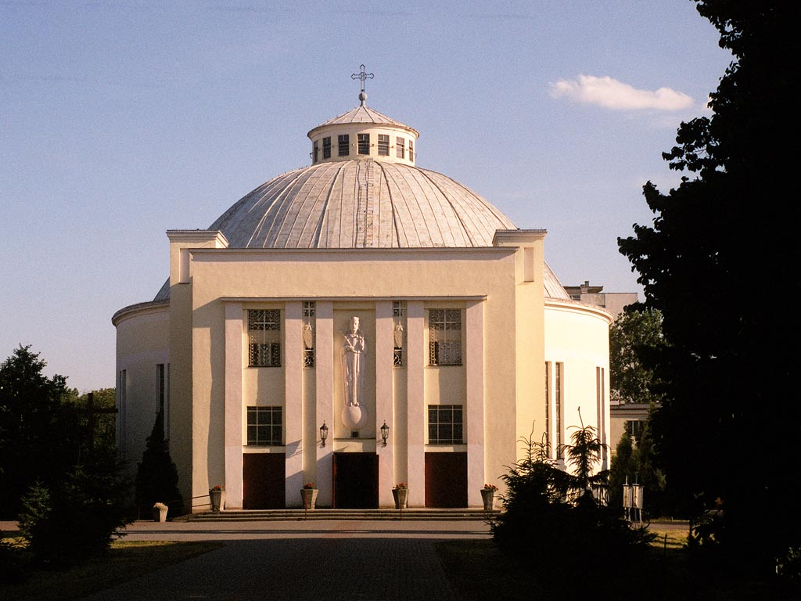

Parafia rzymskokatolicka p.w. Chrystusa Króla w Toruniu

Kościół jest zbudowany na planie centralnym z żelbetonu i cegły w kształcie rotundy przypominającej rzymski Panteon. Kościół jest otynkowany, nakryty kopułą o sklepieniu kryształowym, pokryty blachą cynkową i zwieńczony latarnią. Do rotundy przylegają dwa duże rozality. Pierwszy od strony północnej jako kruchta tworzy przedsionek i chór. Jego stronę frontową zdobi duża płaskorzeźba Chrystusa Króla stojącego na kuli ziemskiej, dzieło artysty rzeźbiarza St. Zelka. Po bokach rozalitu wybudowano dwie niewielkie czworoboczne wieżyczki, zakończone w górnej partii blendami.
Przybudówka od strony południowej otrzymała swój ostateczny kształt dopiero w 1957 r. i zawiera dwie zakrystie, biuro, kaplicę Miłosierdzia Bożego, korytarz i dwie toalety, a w podziemiu kaplicę pogrzebową oraz urządzenia centralnego ogrzewania na gaz i magazyny.
W prezbiterium znajduje się ołtarz główny na tle ogromnego krzyża z rzeżbą Chrystusa, pod którym umieszczono tabernakulum. Obok ołtarza zlokalizowano ambonkę i sedylia dla celebransów.
W bocznych kaplicach znajdują się ołtarze Najświętszego Serca Pana Jezusa i Matki Bożej Nieustającej Pomocy. Na ścianach nawy i pod chórem rozmieszczono stacje Drogi Krzyżowej, wykonane przez artystę rzeźbiarza Ignacego Zelka. Pod chórem znajdują się dwa ołtarze: św. Antoniego i św. Franciszka z Asyżu.
Na chórze zamontowano 1935 r. organy Sauera, które w 1946 r. powiększono do 14-tu głosów, do dwóch manuałów i pedału. W 1930 r. wyposażono kościół w instalację elektryczną, a 1950 r. w radiofonię, a od 1957 r. w ogrzewanie węglowe, które w 1995 r. zmodernizowano i zamieniono na ogrzewanie gazowe.